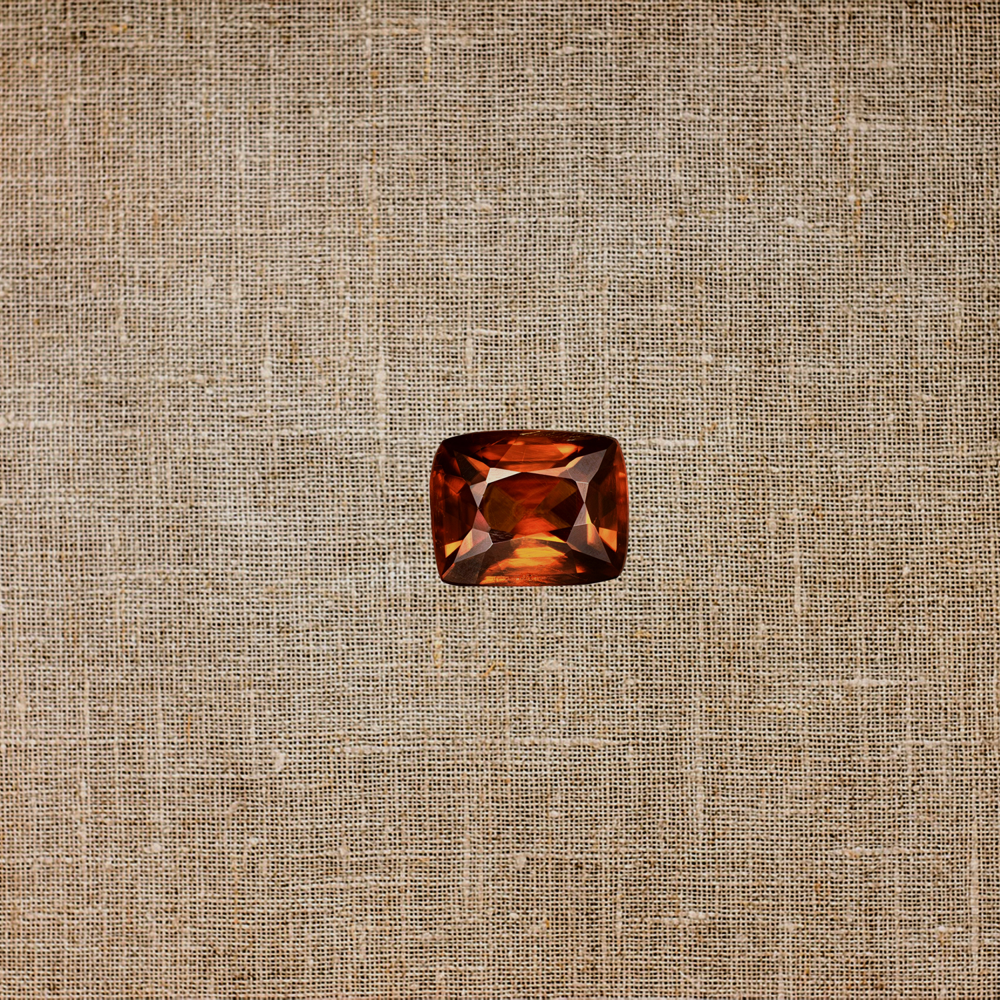

Top 5 najrjeđih minerala na Zemlji
U ovom članku saznajte koji su to najrjeđi minerali na Zemlji, gdje se pronalaze, koja su njihova fizička i kemijska svojstva i kolika je njihova cijena na tržištu. Upoznat ćete se s definicijom minerala i uvjetima koji mineral čine rijetkim.
Autor: Bruno Hledik
30.9.2023.
Tanzanit: mineral s jednim nalazištem, Tanzanijom
U ovom članku saznajte o tanzanitu, koja su njegova fizička i kemijska svojstva i kolika je tržišna cijena. Upoznat ćete se s identifikacijom tanzanita.
Autor: Bruno Hledik
30.9.2023.
Top 5 najotrovnijih minerala na Zemlji
U ovom članku saznajte koji su to najotrovniji minerali na Zemlji, gdje se pronalaze, koja su njihova fizička i kemijska svojstva i kolika je njihova cijena na tržištu. Upoznat ćete se s definicijom minerala i uvjetima koji mineral čine otrovnim.
Autor: Bruno Hledik
30.9.2023.
Smaragd: mineral iz rudnika Muzo, Kolumbija
U ovom članku saznajte o mineralu smaragdu, gdje se pronalazi, koja su njegova fizička i kemijska svojstva i kolika je njegova tržišna cijena. Upoznat ćete se s identifikacijom minerala smaragda i uvjetima koji mineral čine posebnim.
Autor: Bruno Hledik
30.9.2023.
Pirit: mineral iz rudnika Victoria, Španjolska
U ovom članku saznajte o mineralu piritu i njegovom najkvalitetnijem nalazištu, rudniku Viktorija. Upoznat ćete se s definicijom minerala pirita i činjenicama koji mineral čine posebnim.
Autor: Bruno Hledik
30.9.2023.